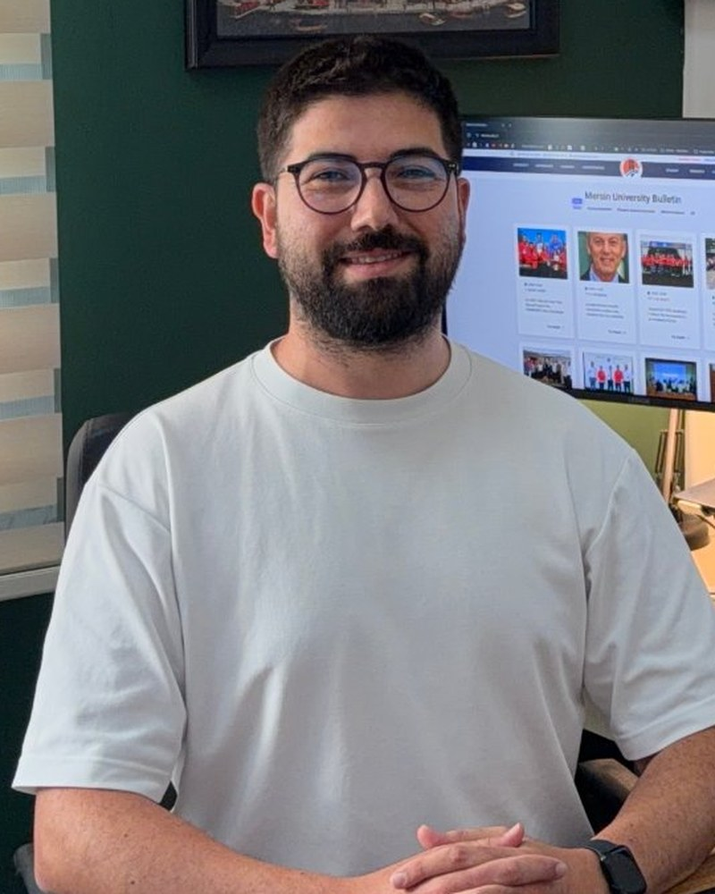

Kurucu ve Laboratuvar DirektörüFounder & Director
Dr. Öğr. ÜyesiAssist. Prof. Dr.
Ali Ammar Kurt
Mersin Üniversitesi Rehberlik ve Psikolojik Danışmanlık Anabilim Dalı’nda öğretim üyesi. Romantik ilişkiler, toksik ilişki dinamikleri, duygu düzenleme ve sosyal medya davranışları üzerine çalışıyor.Faculty member in the Department of Guidance and Psychological Counseling at Mersin University. His research focuses on romantic relationships, toxic relationship dynamics, emotion regulation and social media behavior.
Laboratuvarı; romantik, aile ve arkadaşlık ilişkilerini sistemik bir bakışla anlamak ve bu bilgiyi ilişkileri güçlendiren uygulamalara dönüştürmek amacıyla kurdu.He founded the lab to understand romantic, family and friendship relationships through a systemic lens and to turn this knowledge into practices that strengthen relationships.